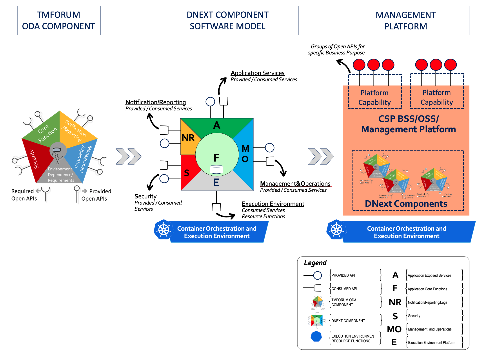
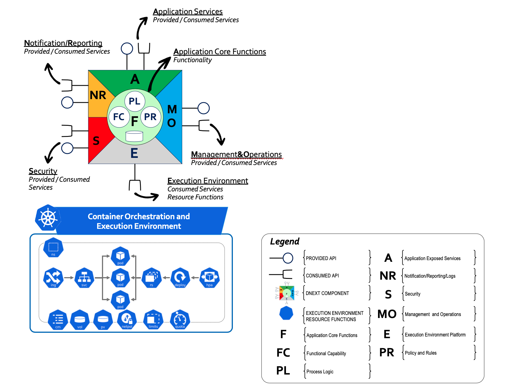
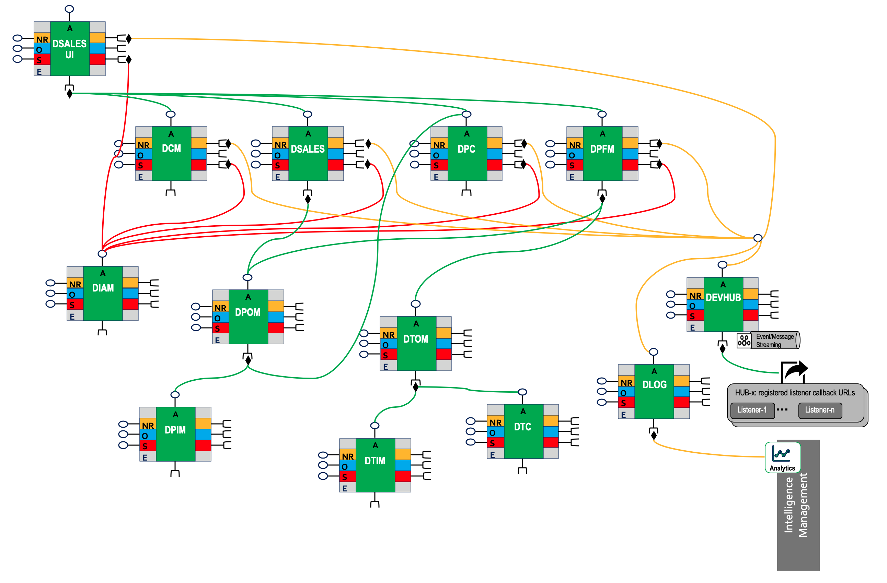

Component Model
1. Introduction
The Open Digital Architecture (ODA) offers an industry-agreed blueprint, language and set of key design principles to follow. The main goal of ODA is to provide pragmatic pathways for the journey from maintaining monolithic, legacy software solutions, towards managing orchestrated, lego-like deployed capabilities realized as components, such components that are nimble from the following four perspectives:
- Business perspective: Support current and future business strategies, capabilities with flexible business process orchestration
- Information Systems Technology (IST) Design perspective: Support standards considering, process models, information models, interface specification, event/notification/process management best-practices
- Implementation perspective: Fosters and exploits cloud-native services/resource functionalities provided by execution platforms, such as dynamic service discovery, replicated deployment contexts, load balancing services, auto scaling, distributed config management, secure/persistent/temporary distributed volumes etc. Information Systems Technology Design Perspective: Support standards considering, process models, information models and APIs
- Operation, Deployment perspective: Provide out of the box combined deployment/run-time features: event notification, monitoring, fault management, operational logs, KPI statistics blended with accounting, performance management and dynamic configuration management interfaces
- Intelligence perspective: Provide data insights and information streams that not only provide real-time operational facts, but also enable/utilize AI capabilities
Important
Considering all the above listed cross cutting aspects in addition to the specific business capability provided by that component, Component Model becomes vital. ** The benefit of a standard Component Model is that it makes it possible to have operationally manageable and dynamically orchestrated functions, meanwhile lowering costs and complexity of integrating multiple components together from different sources on a distributed environment.
The following diagram depicts an overview regarding the impacts of TMFORUM ODA Component approach on MonE Component Model and the relation of the components to the Management Platform. MonE Component Model follows the recommendations and guidelines of TMFORUM ODA Component Definition (Ref. [6]).

Figure-1: Overview: ODA, MonE Component and Management Platform
From Information Systems Technology (IST) Design Perspective, MonE Components follow TMFORUM Guidelines exposing their application services via well defined TMFORUM Open APIs, as well as following TMFORUM specifications considering business process flow management and Event/Notification management aspects.
From Implementation perspective, MonE Components provides reusable and agile means of using a diverse set of IT driven technologies, following Cloud Native Technology Landscape. From cloud native application development perspective, components can be implemented using different software technologies and deployed across multiple run time environments. MonE components utilize:
- Languages: MonE Back-End Components utilize Java, Spring Boot technologies exposing their capabilities via TMFORUM Open API compliant http-REST services (microservices)
- Languages: MonE UI Front-End Components utilize Angular, a TypeScript-based open-source web application framework.
- Databases: MonE Components utilize PostgreSQL as RDBMS and MongoDB as a NOSQL DB
- Process Management: MonE Components utilize Camunda as a BPMN engine
- Event Streaming and Messaging: MonE Components utilize Kafka as a distributed Event Streaming, Publish/Subscribe Event Message Bus.
From Operation, Deployment perspective, among several possible IT run time technologies being bare metal, virtual machines and containers, MonE Components utilize containerization, and in particular targets Kubernetes and/or RedHat OpenShift deployments. For details regarding MonE utilized resources provided by Kubernetes, please refer to Container Orchestration and Management Platform
From Intelligence perspective, MonE components utilize, SLF4J/LogBack, Fluentd, Elastic, Kibana or Grafana.
2. Component Anatomy
The following diagram depicts a more detailed view of the MonE Component anatomy.

Figure-2: MonE Component Anatomy
2.1. Application Services (A)
MonE Component Application Services are exposed through the TMFORUM compliant interfaces that provides access to the capabilities for managing the relevant resources/objects related to the primary business purpose of the component. Whether be Provided or Consumed, MonE Component Application Services are deployed and can be accessed as one of the following:
- For service driven back-end components: TMFORUM Open API Compliant dynamically discoverable, http-REST services deployed as one or more Kubernetes Service Resources
- For event driven back-end components: TMFORUM Event Management API Compliant events posted to a specific topic hosted on a Kafka Event Streaming Bus subscribed by that component and response posted via TMFORUM compliant notification mechanisms.
The Application Services (A) functions of the MonE Component include, but not limited to the following responsibilities:
- Receive requests, validate the provided input
- Invoke the Application Core Functions providing the input data and performing activities to result in desired outcome
- Validate the response provided by the Application Core Functions and reply back
- As part of the required business logic, Application Core Functions of MonE Components may have specific needs for specific tasks to be carried out on its behalf related to its purpose provided as reusable services by other MonE or 3PP Component(s). These tasks may include, the evaluation of information, enrichment of input data with additional information required by the business logic or informing other MonE components to modify the state of the underlying system etc. In short Consumed Interface(s) represent the dependent interfaces of that MonE Component.
2.2. Application Core Functions (F)
The Application Functionality (F) functions of the MonE Component include, but not limited to the following responsibilities:
- Processing Logic (PL) for managing component purpose related business resource entity states
- Functional Capabilities (FC) including but not limited to managing persistence, state, validation, enrichment and transformation of business entity and/or its attributes and if required invocation of specific Consumed Interface(s) for additional required capabilities
- Policy and Rules (PR) related checks and management specific to the business purpose of the MonE Module
- Provide statistics, data, configurational, monitoring and/or alarms capabilities that utilize the following complementing and cross cutting capabilities common to all MonE Components
- Notification/Reporting
- Security
- Management/Operations
2.3. Notification, Reporting and Logs (NR)
Regarding the Notification functions of the MonE Components, please refer to DEVHUB-Common Functional Components as explained in MonE L2 Architecture.
The Reporting and Logs functions of the MonE Component allow tracking of "who did what and when and at what latency and throughput". The following types of information streams are generated by all MonE Components, providing insights about both operational and KPI aspects:
- Operational Information Stream: This LOG stream consists of dynamically controlled and level based (warn, error, fatal etc.) operational log data. In-production MonE components will provide the following types information for this stream:
- Timestamp information
- Component Name, such as: "DCM", "DPC"
- Thread Identifier
- Method name, such as: "get", "post", "put", "patch" and "delete"
- Resource URI such as "/{apiRoot}/MonE/troubleTicket/v4/troubleTicket". Please note that resource URI consists of the following:
- API Root (aka base URL) including API version, such as "/{apiRoot}/MonE-api/troubleTicket/v4"
- Resource Path (including {id} where applicable), such as "/troubleTicket" or "/troubleTicket/{id}"
- Level of issue
- Warn: Potential harmful situations that still allow the service/transaction to be completed
- Error: Errors that only prevent completion of a specific service/transaction, but still allow the component itself to continue running
- Fatal: Severe component level error events that presumably lead the component to stop working properly
- Transactional Identifier Context: Providing unique transactional identifier set (session-id, interaction-id, transaction-id etc.) making it possible to correlate operational information of different MonE components in a multi-component realized business scenario
- StatusCode (Error or resultCode)
- Short Description
- Other Log Information
- Key Performance Indicator (KPI) Statistics Stream: This LOG stream consists of periodically emitted KPI statistics over a component level configurable period. In-production MonE
components will provide the following types information for this stream:
- Timestamp information
- Period: Duration of the statistical feed such as 10min
- Component Name
- Statistics information for each supported Method/Resource URI combination by that component that includes:
- Method name, such as: "get", "post", "put", "patch" and "delete"
- Resource URI such as "/{apiRoot}/MonE/troubleTicket/v4/troubleTicket"
- KPI context for that Method and Resource URI combination
- Mean Response Time(ms)
- Min Response Time(ms)
- Max Response Time(ms)
- Mean Throughput(transactions/sec)
- Total Number of Requests
- Total Number of Failures
- Total Number of Success
2.4. Security (S)
The Security (S) functions of the MonE Component include, but not limited to the following responsibilities:
- the control of Access to all the component’s interfaces
- authenticating the accessing user with appropriate methods
- authorizing the use of the component’s different functions according to authorization rules
- accepting certificates and other security artifacts
- authentication exchanges (OAuth etc.)
- sending of a lock-down notification when the component needs to stop accepting requests because some security breach has been detected
2.5. Management and Operations (MO)
The Management and Operations (MO) functions of the MonE Component are related to handling the FCAP aspects:
- Fault Management
- Configuration
- Accounting
- Performance
The Management and Operations (MO) functions of the MonE Component include, but not limited to the following responsibilities:
- Monitoring for faults within the component and faults in APIs consumed from other components
- Tracking and managing configuration of component functional capabilities enabling/disabling/modifying behavior of component provided business capabilities at the MonE Component Application Services:Provided Interface
- Continuous information feed and providing data to Notification, Reporting and Logs (NR) related to KPI performance statistics, as well as dynamic monitoring/throttling of performance
- Configuration of MonE Component utilization of resources/services provided by Execution (Kubernetes) platform, such as ConfigMap, Service, ReplicaSet, Horizontal Pod Autoscaler etc. Please refer to Container Orchestration and Management Platform for details.
- Optionally Accounting for usage by other components of capabilities offered by this component
3. Component Dependencies and Service Reusability
In reality each end2end business application is realized and composed of multi MonE Component(s) working in harmony utilizing the MonE Component Anatomy interfaces for interworking and intercommunications.
Info
As per Kubernetes architecture, Pod(s) are the smallest deployable units of computing that you can create and manage in Kubernetes. A Pod (as in a pod of whales or pea pod) is a group of one or more containers , with shared storage/network resources, and a specification for how to run the containers. A Pod's contents are always co-located and co-scheduled, and run in a shared context. In case of multiple containers forming a Pod, one container may include the actual Application Services and Application Core Functions, where as a side car container can provide complementary logging, event management, security and operational capabilities.
It shall be noted that since a MonE Component(s) are realized as Pods deployed on Kubernetes exposing their Component specific Application Services via Kubernetes Services, in an Orchestrated environment, services are dynamically discovered, load-balanced with multiple pods dynamically scheduled to run on available Kubernetes Nodes. Each MonE Component if required utilize the services provided by the relevant MonE Component as part of their business logic.

Figure-3: Component Dependencies and Service Reusability
To exemplify the MonE Component dependencies, the diagram depicts a high-level simplified view of end to end sales dependencies, where:
- An order is captured, placed via Sales Management UI (DSALES-UI) utilizing the information and functionalities provided by back-end Sales Management and Customer Information Management (DSALES, DCM).
- End to to end flows orchestrated and utilizing process flow management capabilities (DPFM)c
- Orders commercially decomposed and fulfilled (DPOM), technically fulfilled (DTOM)
- Order fulfillment utilizing the configurative information in catalogs (DPC for commercial products, DTC for services and resources)
- Inventory subsystems upon fulfillment (DPIM, DTIM) are updated as required
- All modules relying on a centralized identity access management (DIAM) and security. Please note that to keep the diagram simple not all security associations are drawn for the lower layer components
- All modules generating operational, KPI info streams as well as generating event notifications handled by MonE Log Agent (DLOG) and MonE Event Hub module (DEVHUB). Please note that to keep the diagram simple not all security associations are drawn for the lower layer components
4. Component Lifecycle
TODO...